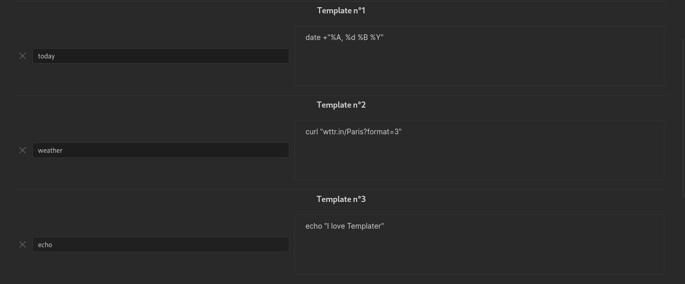

简介
Templater 是一种模板语言，允许你在笔记中插入变量和函数的结果。它还允许你执行JavaScript代码来操作这些变量和函数。
通过 Templater，你将能够创建强大的模板来自动化手动任务。
快速示例
以下是使用 Templater 语法的模板文件：
---
creation date: <% tp.file.creation_date() %>
modification date: <% tp.file.last_modified_date("dddd Do MMMM YYYY HH:mm:ss") %>
---
<< [[<% tp.date.now("YYYY-MM-DD", -1) %>]] | [[<% tp.date.now("YYYY-MM-DD", 1) %>]] >>
# <% tp.file.title %>
<% tp.web.daily_quote() %>
插入后将产生以下结果：
---
creation date: 2021-01-07 17:20
modification date: Thursday 7th January 2021 17:20:43
---
<< [[2021-04-08]] | [[2021-04-10]] >>
# Test Test
> Do the best you can until you know better. Then when you know better, do better.
> — <cite>Maya Angelou</cite>
安装
您可以通过Obsidian内的社区插件标签页安装此插件。搜索"Templater"。
安装Templater后重启Obsidian应用是一个好习惯，以确保一切正常工作。
术语
在Templater中，我们使用以下术语：
-
命令：一个由开始标签
<%和结束标签%>包围的代码块，例如<% tp.date.now() %>。命令是用户与Templater交互的基本方式。 -
内置函数：Templater预定义的函数，用于执行特定任务，如
tp.date.now()、tp.file.title等。这些函数按功能分组到不同的模块中。 -
用户函数：用户自定义的函数，可以是JavaScript脚本或系统命令。
-
变量：存储值的容器，如
tp（Templater的主对象）或tR（模板结果）。
示例
以下模板包含2个命令，调用2个不同的内置函数：
昨天: <% tp.date.yesterday("YYYY-MM-DD") %>
明天: <% tp.date.tomorrow("YYYY-MM-DD") %>
我们将在下一部分看到编写命令所需的语法。
语法
Templater 使用自定义模板引擎（rusty_engine）语法来声明命令。您可能需要一些时间来适应它，但一旦理解了基本概念，这种语法并不难掌握。
Templater的所有函数都是JavaScript对象，通过命令调用。
命令语法
命令必须同时包含开始标签<%和结束标签%>。
使用tp.date.now内置函数的完整命令示例：<% tp.date.now() %>
函数语法
对象层次结构
Templater的所有函数，无论是内置函数还是用户函数，都在tp对象下可用。可以说所有函数都是tp对象的子对象。要访问对象的"子对象"，我们需要使用点表示法.。
这意味着Templater函数调用总是以tp.<something>开始。
函数调用
要调用函数，我们需要使用函数调用的特定语法：在函数名后附加一个开括号和一个闭括号。
例如，我们使用tp.date.now()来调用tp.date.now内置函数。
函数可以有参数和可选参数。它们放在开括号和闭括号之间，如下所示：
tp.date.now(arg1_value, arg2_value, arg3_value, ...)
所有参数必须按正确顺序传递。
函数的参数可以有不同的类型。以下是函数可能的类型的非详尽列表：
string类型表示值必须放在单引号或双引号内（"value"或'value'）number类型表示值必须是整数（15、-5等）boolean类型表示值必须是true或false（完全小写），不能是其他值。
调用函数时必须遵守参数的类型，否则函数将无法正常工作。
函数文档语法
Templater内置函数的文档使用以下语法：
tp.<my_function>(arg1_name: type, arg2_name?: type, arg3_name: type = <default_value>, arg4_name: type1|type2, ...)
其中：
arg_name表示参数的符号性名称，以便理解其用途。type表示参数的预期类型。调用内置函数时必须遵守此类型，否则会抛出错误。
如果参数是可选的，它将附加一个问号?，例如arg2_name?: type
如果参数有默认值，它将使用等号=指定，例如arg3_name: type = <default_value>。
如果参数可以有不同的类型，它将使用管道符号|指定，例如arg4_name: type1|type2
语法警告
请注意，此语法仅用于文档目的，以便能够理解函数期望的参数。
调用函数时，您不必指定参数的名称、类型或默认值。如此处所述，只需要参数的值。
示例
以tp.date.now内置函数文档为例：
tp.date.now(format?: string = "YYYY-MM-DD", offset?: number|string, reference?: string, reference_format?: string)
这个内置函数有4个可选参数：
- 类型为
string的format，默认值为"YYYY-MM-DD"。 - 类型为
number或string的offset。 - 类型为
string的reference。 - 类型为
string的reference_format。
这意味着该内置函数的有效调用包括：
<% tp.date.now() %><% tp.date.now("YYYY-MM-DD", 7) %><% tp.date.now("YYYY-MM-DD", 7, "2021-04-09", "YYYY-MM-DD") %><% tp.date.now("dddd, MMMM Do YYYY", 0, tp.file.title, "YYYY-MM-DD") %>*假设文件名格式为："YYYY-MM-DD"
另一方面，无效调用包括：
tp.date.now(format: string = "YYYY-MM-DD")tp.date.now(format: string = "YYYY-MM-DD", offset?: 0)tp.date.now(format = "YYYY-MM-DD")tp.date.now(offset: 7)tp.date.now(tp.file.title)
设置
常规设置
模板文件夹位置：此文件夹中的文件将作为模板可用。桌面端语法高亮在编辑模式下为 Templater 命令添加语法高亮。移动端语法高亮在移动端编辑模式下为 Templater 命令添加语法高亮。谨慎使用：这可能会破坏移动平台上的实时预览。自动跳转到光标位置在插入模板后自动触发tp.file.cursor。您也可以设置热键手动触发tp.file.cursor。在新建文件时触发Templater：Templater 将监听新文件创建事件，如果匹配您设置的规则，将替换在新文件内容中找到的每个命令。这使 Templater 与其他插件兼容，如每日笔记核心插件、日历插件、复习插件、笔记重构插件等。- 确保在下面的文件夹模板或文件正则表达式模板中设置规则。
- 警告： 如果您在创建时创建具有未知/不安全内容的新文件，这可能会很危险。确保每个新文件在创建时的内容都是安全的。
模板热键
模板热键允许您将模板绑定到热键。
文件夹模板
注意：默认情况下，此设置是隐藏的。要查看它，首先启用 在新建文件时触发模板 设置。由于它与文件正则表达式模板互斥，启用一个将禁用另一个。
您可以使用 文件夹模板 功能为选定的文件夹和子文件夹指定将自动使用的模板。将使用最深层的匹配，因此规则的顺序无关紧要。
如果需要全部捕获，可以为 "/" 添加规则。
文件正则表达式模板
注意：默认情况下，此设置是隐藏的。要查看它，首先启用 在新建文件时触发模板 设置。由于它与文件夹模板互斥，启用一个将禁用另一个。
您可以指定新文件路径将测试的正则表达式声明。如果正则表达式匹配，将自动使用关联的模板。规则按从上到下的顺序测试，并使用第一个匹配项。
如果需要全部捕获，最后添加一个 ".*" 规则。
使用 Regex101 等工具验证您的正则表达式。
启动模板
启动模板是Templater启动时将执行一次的模板。
这些模板不会输出任何内容。
这对于设置添加到Obsidian事件的钩子的模板非常有用。
用户脚本函数
此文件夹中的所有JavaScript文件将作为CommonJS模块加载，以导入自定义用户函数。
该文件夹需要从保管库访问。
查看文档了解更多信息。
用户系统命令函数
允许您创建与系统命令关联的用户函数。
查看文档了解更多信息。
警告： 从不受信任的来源执行任意系统命令可能很危险。只运行您理解的、来自可信来源的系统命令。
常见问题
Windows系统下Unicode字符（表情符号等）无法正常工作？
Windows上的cmd.exe和powershell已知存在Unicode字符问题。
您可以查看 https://github.com/SilentVoid13/Templater/issues/15#issuecomment-824067020 寻找解决方案。
另一个好的解决方案（可能是最佳方案）是使用 Windows Terminal 并在Templater的设置中将其设置为默认shell。
另一个包含可能适合您的解决方案的资源：https://stackoverflow.com/questions/49476326/displaying-unicode-in-powershell
内置函数
Templater 提供的不同内置变量和函数分布在不同的模块中，以便对它们进行分类。现有的内置模块有：
- App模块:
tp.app - Config模块:
tp.config - Date模块:
tp.date - File模块:
tp.file - Frontmatter模块:
tp.frontmatter - Hooks模块:
tp.hooks - Obsidian模块:
tp.obsidian - System模块:
tp.system - Web模块:
tp.web
如果您正确理解了对象层次结构，这意味着一个典型的内置函数调用看起来像这样：<% tp.<模块名>.<内置函数名> %>
贡献
我邀请每个人通过添加新的内置函数来为这个插件的开发做出贡献。更多信息请点击这里。
App模块
App模块提供对Obsidian App对象的访问，允许您使用Obsidian的核心功能。
这主要在编写脚本时有用。
更多信息请参考Obsidian的开发者文档。
示例
// 获取所有文件夹
<%
tp.app.vault.getAllLoadedFiles()
.filter(x => x instanceof tp.obsidian.TFolder)
.map(x => x.name)
%>
// 更新现有文件的frontmatter
<%*
const file = tp.file.find_tfile("path/to/file");
await tp.app.fileManager.processFrontMatter(file, (frontmatter) => {
frontmatter["key"] = "value";
});
%>
Config模块
Config模块允许您访问和更新Templater的配置设置。
文档
tp.config.active_file_template
获取当前活动文件模板的相对路径。
tp.config.template_file
获取当前执行模板文件的相对路径。
tp.config.target_file
获取目标文件的相对路径（模板将应用到该文件）。
tp.config.tR
检索与当前上下文相关的模板结果对象（tR）。
Date模块
日期模块包含与日期和时间相关的函数。
文档
函数文档使用特定语法。更多信息在此。
tp.date.now(format, offset, reference, reference_format)
返回当前日期和时间。
参数
format: 日期的输出格式。默认为"YYYY-MM-DD"。offset: 从当前日期开始的偏移量（可以是正数或负数）。默认为0。reference: 参考日期，偏移量将从该日期计算而不是当前日期。默认为null。reference_format: 参考日期的输入格式。默认为null。
示例
// 基本用法
<% tp.date.now() %>
// 自定义格式
<% tp.date.now("Do MMMM YYYY") %>
// 带偏移量
<% tp.date.now("dddd Do MMMM YYYY", 7) %>
// 使用参考日期
<% tp.date.now("dddd Do MMMM YYYY", 0, "2021-04-09") %>
// 使用参考日期和格式
<% tp.date.now("YYYY-MM-DD", 0, "2021-04-09", "YYYY-MM-DD") %>
tp.date.tomorrow(format)
返回明天的日期。
参数
format: 日期的输出格式。默认为"YYYY-MM-DD"。
示例
// 基本用法
<% tp.date.tomorrow() %>
// 自定义格式
<% tp.date.tomorrow("Do MMMM YYYY") %>
tp.date.weekday(format, weekday, reference, reference_format)
返回特定的工作日。
参数
format: 日期的输出格式。默认为"YYYY-MM-DD"。weekday: 工作日的数字(0-6，0表示星期日)。默认为1(星期一)。reference: 参考日期，将返回最接近参考日期的工作日。默认为null。reference_format: 参考日期的输入格式。默认为null。
示例
// 基本用法（默认星期一）
<% tp.date.weekday() %>
// 星期三
<% tp.date.weekday("YYYY-MM-DD", 3) %>
// 从参考日期开始的星期一
<% tp.date.weekday("YYYY-MM-DD", 1, "2021-04-09") %>
// 从参考日期开始的星期天
<% tp.date.weekday("YYYY-MM-DD", 0, "2021-04-09", "YYYY-MM-DD") %>
tp.date.yesterday(format)
返回昨天的日期。
参数
format: 日期的输出格式。默认为"YYYY-MM-DD"。
示例
// 基本用法
<% tp.date.yesterday() %>
// 自定义格式
<% tp.date.yesterday("Do MMMM YYYY") %>
Moment.js
Templater提供了对moment对象的访问，可以使用它的所有功能。
关于moment.js的更多信息在此。
示例
// 当前日期，格式为YYYY-MM-DD
<% moment().format("YYYY-MM-DD") %>
// 当前日期，使用"星期几，月份+日 年份"的格式
<% moment().format("dddd, MMMM Do YYYY") %>
// 7天前的日期
<% moment().subtract(7, 'days').format("YYYY-MM-DD") %>
// 一个月后的日期，使用自定义格式
<% moment().add(1, 'month').format("YYYY-MM-DD") %>
示例
// 基本用法
<% tp.date.now() %>
// 自定义格式
<% tp.date.now("Do MMMM YYYY") %>
// 带偏移量
<% tp.date.now("dddd Do MMMM YYYY", 7) %>
// 使用参考日期
<% tp.date.now("dddd Do MMMM YYYY", 0, "2021-04-09") %>
// 使用参考日期和格式
<% tp.date.now("YYYY-MM-DD", 0, "2021-04-09", "YYYY-MM-DD") %>
// 基本用法（默认星期一）
<% tp.date.weekday() %>
// 星期三
<% tp.date.weekday("YYYY-MM-DD", 3) %>
// 从参考日期开始的星期一
<% tp.date.weekday("YYYY-MM-DD", 1, "2021-04-09") %>
// 从参考日期开始的星期天
<% tp.date.weekday("YYYY-MM-DD", 0, "2021-04-09", "YYYY-MM-DD") %>
// 基本用法
<% tp.date.yesterday() %>
// 自定义格式
<% tp.date.yesterday("Do MMMM YYYY") %>
// 基本用法
<% tp.date.tomorrow() %>
// 自定义格式
<% tp.date.tomorrow("Do MMMM YYYY") %>
File模块
File模块包含与当前文件和文件系统相关的函数和属性。
- 文档
tp.file.contenttp.file.create_new(template, filename, open_new, folder)tp.file.creation_date(format)tp.file.cursor(order)tp.file.cursor_append(content)tp.file.exists(filename)tp.file.find_tfile(filename)tp.file.folder(relative)tp.file.include(include_link)tp.file.last_modified_date(format)tp.file.move(new_path, file_to_move)tp.file.path(relative)tp.file.rename(new_title)tp.file.selection()tp.file.tagstp.file.title
- 示例
文档
函数文档使用特定语法。更多信息在此。
tp.file.content
获取当前文件的全部内容。
tp.file.create_new(template, filename, open_new, folder)
使用指定的模板创建一个新文件。
参数
template: 要使用的模板路径（相对于模板文件夹）。filename: 新文件的文件名。open_new: 创建后是否打开新文件。默认为true。folder: 新文件的目标文件夹（相对于保险库根目录）。默认为当前文件所在文件夹。
示例
// 基本用法
<% tp.file.create_new("my_template", "MyFile") %>
// 不打开新文件
<% tp.file.create_new("my_template", "MyFile", false) %>
// 指定目标文件夹（即保险库根目录下的"target_folder"文件夹）
<% tp.file.create_new("my_template", "MyFile", true, "target_folder") %>
// 指定目标文件夹（当前文件所在文件夹的子文件夹"target_folder"）
<% tp.file.create_new("my_template", "MyFile", true, "./target_folder") %>
tp.file.creation_date(format)
获取文件的创建日期。
参数
format: 日期的输出格式。默认为"YYYY-MM-DD"。
示例
// 基本用法
<% tp.file.creation_date() %>
// 自定义格式
<% tp.file.creation_date("dddd Do MMMM YYYY HH:mm") %>
tp.file.cursor(order)
在渲染后将光标放置在特定位置。
参数
order: 决定光标放置的顺序（如果有多个光标）。默认为1。
示例
// 基本用法
<% tp.file.cursor() %>
// 指定顺序
<% tp.file.cursor(2) %>
tp.file.cursor_append(content)
在光标位置追加内容。
参数
content: 要追加的内容。
示例
// 基本用法
<% tp.file.cursor_append("追加的内容") %>
tp.file.exists(filename)
检查文件是否存在。
参数
filename: 要检查的文件名（绝对路径或相对于保险库根目录的路径）。
示例
// 基本用法
<% tp.file.exists("MyFile.md") %>
// 使用绝对路径
<% tp.file.exists("C:\\Path\\To\\MyFile.md") %>
tp.file.find_tfile(filename)
通过名称查找一个TFile对象。
参数
filename: 文件名（绝对路径或相对于保险库根目录的路径）。
示例
// 基本用法
<% tp.file.find_tfile("MyFile.md") %>
tp.file.folder(relative)
获取文件所在的文件夹路径。
参数
relative: 是否返回相对于保险库根目录的路径。默认为false。
示例
// 绝对路径
<% tp.file.folder() %>
// 相对路径
<% tp.file.folder(true) %>
tp.file.include(include_link)
包含另一个文件的内容。
参数
include_link: 要包含的文件链接（可以是文件名、相对路径或Wiki链接）。
示例
// 使用文件名
<% tp.file.include("MyFile") %>
// 使用Wiki链接
<% tp.file.include("[[MyFile]]") %>
tp.file.last_modified_date(format)
获取文件的最后修改日期。
参数
format: 日期的输出格式。默认为"YYYY-MM-DD"。
示例
// 基本用法
<% tp.file.last_modified_date() %>
// 自定义格式
<% tp.file.last_modified_date("dddd Do MMMM YYYY HH:mm") %>
tp.file.move(new_path, file_to_move)
将文件移动到新位置。
参数
new_path: 新的文件路径（相对于保险库根目录）。file_to_move: 要移动的文件（TFile对象）。如果未提供，则使用当前文件。
示例
// 移动当前文件
<% tp.file.move("target_folder/new_name") %>
// 移动指定文件
<% tp.file.move("target_folder/new_name", tp.file.find_tfile("MyFile.md")) %>
tp.file.path(relative)
获取文件的路径。
参数
relative: 是否返回相对于保险库根目录的路径。默认为false。
示例
// 绝对路径
<% tp.file.path() %>
// 相对路径
<% tp.file.path(true) %>
tp.file.rename(new_title)
重命名当前文件。
参数
new_title: 文件的新标题/名称。
示例
// 基本用法
<% tp.file.rename("新文件名") %>
tp.file.selection()
获取当前选择的文本。
示例
// 基本用法
<% tp.file.selection() %>
tp.file.tags
获取文件的标签列表。
示例
// 基本用法
<% tp.file.tags %>
tp.file.title
获取当前文件的标题（不带扩展名）。
示例
// 基本用法
<% tp.file.title %>
示例
// 基本用法
<% tp.file.creation_date() %>
// 自定义格式
<% tp.file.creation_date("dddd Do MMMM YYYY HH:mm") %>
// 基本用法
<% tp.file.cursor() %>
// 指定顺序
<% tp.file.cursor(2) %>
// 基本用法
<% tp.file.cursor_append("追加的内容") %>
// 基本用法
<% tp.file.exists("MyFile.md") %>
// 使用绝对路径
<% tp.file.exists("C:\\Path\\To\\MyFile.md") %>
// 基本用法
<% tp.file.find_tfile("MyFile.md") %>
// 绝对路径
<% tp.file.folder() %>
// 相对路径
<% tp.file.folder(true) %>
// 使用文件名
<% tp.file.include("MyFile") %>
// 使用Wiki链接
<% tp.file.include("[[MyFile]]") %>
// 基本用法
<% tp.file.last_modified_date() %>
// 自定义格式
<% tp.file.last_modified_date("dddd Do MMMM YYYY HH:mm") %>
// 移动当前文件
<% tp.file.move("target_folder/new_name") %>
// 移动指定文件
<% tp.file.move("target_folder/new_name", tp.file.find_tfile("MyFile.md")) %>
// 绝对路径
<% tp.file.path() %>
// 相对路径
<% tp.file.path(true) %>
// 基本用法
<% tp.file.rename("新文件名") %>
// 基本用法
<% tp.file.selection() %>
// 基本用法
<% tp.file.tags %>
// 基本用法
<% tp.file.title %>
// 基本用法
<% tp.file.create_new("my_template", "MyFile") %>
// 不打开新文件
<% tp.file.create_new("my_template", "MyFile", false) %>
// 指定目标文件夹（即保险库根目录下的"target_folder"文件夹）
<% tp.file.create_new("my_template", "MyFile", true, "target_folder") %>
// 指定目标文件夹（当前文件所在文件夹的子文件夹"target_folder"）
<% tp.file.create_new("my_template", "MyFile", true, "./target_folder") %>
Frontmatter模块
这个模块允许您访问当前文件的frontmatter变量。
文档
tp.frontmatter.<frontmatter变量名>
获取文件frontmatter变量的值。
如果您的frontmatter变量名称包含空格，可以使用方括号表示法引用它，如下所示：
<% tp.frontmatter["包含空格的变量名"] %>
示例
假设您有以下文件：
---
alias: myfile
note type: seedling
---
文件内容
那么您可以使用以下模板：
文件元数据别名：<% tp.frontmatter.alias %>
笔记类型：<% tp.frontmatter["note type"] %>
对于frontmatter中的列表，您可以使用JavaScript数组原型方法来操作数据的显示方式。
---
categories:
- book
- movie
---
<% tp.frontmatter.categories.map(prop => ` - "${prop}"`).join("\n") %>
`
Hooks模块
Hooks模块允许您在特定事件发生时注册回调函数。
文档
函数文档使用特定语法。更多信息在此。
tp.hooks.on_all_templates_executed(callback)
当当前活动文件中的所有模板都已执行完毕时调用。
参数
callback: 在所有模板执行完毕后要调用的回调函数。
示例
// 模板执行完成后更新frontmatter
<%*
tp.hooks.on_all_templates_executed(async () => {
const file = tp.file.find_tfile(tp.file.path(true));
await tp.app.fileManager.processFrontMatter(file, (frontmatter) => {
frontmatter["key"] = "value";
});
});
%>
// Templater更新文件后，从另一个插件运行修改当前文件的命令
<%*
tp.hooks.on_all_templates_executed(() => {
tp.app.commands.executeCommandById("obsidian-linter:lint-file");
});
-%>
Obsidian模块
Obsidian模块提供对Obsidian API的访问，允许您使用Obsidian的内部功能。
这主要在编写脚本时有用。
更多信息请参考Obsidian API的声明文件。
示例
// 获取所有文件夹
<%
tp.app.vault.getAllLoadedFiles()
.filter(x => x instanceof tp.obsidian.TFolder)
.map(x => x.name)
%>
// 规范化路径
<% tp.obsidian.normalizePath("Path/to/file.md") %>
// HTML转Markdown
<% tp.obsidian.htmlToMarkdown("\<h1>标题\</h1>\<p>段落\</p>") %>
// HTTP请求
<%*
const response = await tp.obsidian.requestUrl("https://jsonplaceholder.typicode.com/todos/1");
tR += response.json.title;
%>
System模块
System模块包含与系统交互相关的函数，例如复制到剪贴板、显示提示或创建建议器。
文档
函数文档使用特定语法。更多信息在此。
tp.system.clipboard()
返回剪贴板的内容。
示例
// 基本用法
<% tp.system.clipboard() %>
tp.system.prompt(prompt_text, default_value, throw_on_cancel, multiline)
显示一个提示窗口，要求用户输入内容。
参数
prompt_text: 显示给用户的提示文本。default_value: 提示中的默认值。默认为空字符串。throw_on_cancel: 如果为true，当用户取消提示时抛出错误。默认为false。multiline: 如果为true，显示多行输入框。默认为false。
示例
// 基本用法
<% tp.system.prompt("请输入文本") %>
// 带默认值
<% tp.system.prompt("请输入文本", "默认值") %>
// 多行输入
<% tp.system.prompt("请输入多行文本", "", false, true) %>
tp.system.suggester(text_items, items, throw_on_cancel, placeholder, limit)
显示一个带有自动完成功能的建议器，让用户从列表中选择一个项目。
参数
text_items: 要向用户显示的文本项目数组。items: 选择相应文本项目时返回的值数组。默认为text_items。throw_on_cancel: 如果为true，当用户取消建议器时抛出错误。默认为false。placeholder: 建议器的占位符文本。默认为空字符串。limit: 要显示的项目数量限制。默认为无限制。
示例
// 基本用法
<% tp.system.suggester(["选项1", "选项2", "选项3"], ["值1", "值2", "值3"]) %>
// 使用相同的文本和值
<% tp.system.suggester(["值1", "值2", "值3"]) %>
// 带有占位符
<% tp.system.suggester(["选项1", "选项2", "选项3"], ["值1", "值2", "值3"], false, "请选择一个选项") %>
示例
// 基本用法
<% tp.system.clipboard() %>
// 基本用法
<% tp.system.prompt("请输入文本") %>
// 带默认值
<% tp.system.prompt("请输入文本", "默认值") %>
// 多行输入
<% tp.system.prompt("请输入多行文本", "", false, true) %>
// 基本用法
<% tp.system.suggester(["选项1", "选项2", "选项3"], ["值1", "值2", "值3"]) %>
// 使用相同的文本和值
<% tp.system.suggester(["值1", "值2", "值3"]) %>
// 带有占位符
<% tp.system.suggester(["选项1", "选项2", "选项3"], ["值1", "值2", "值3"], false, "请选择一个选项") %>
Web模块
Web模块提供与网络资源交互的功能，允许您获取网页内容或生成URL。
文档
函数文档使用特定语法。更多信息在此。
tp.web.daily_quote()
从https://api.quotable.io/random获取每日名言。
示例
// 基本用法
<% tp.web.daily_quote() %>
tp.web.random_picture(size, query, provider)
从Unsplash获取随机图片。
参数
size: 图片尺寸，格式为"宽度x高度"，例如"200x300"。query: 搜索查询，以获取特定类型的图片。provider: 提供商，目前只支持"unsplash"。
示例
// 基本用法
<% tp.web.random_picture() %>
// 指定尺寸
<% tp.web.random_picture("200x200") %>
// 使用查询
<% tp.web.random_picture("200x200", "nature") %>
示例
// 基本用法
<% tp.web.daily_quote() %>
// 基本用法
<% tp.web.random_picture() %>
// 指定尺寸
<% tp.web.random_picture("200x200") %>
// 使用查询
<% tp.web.random_picture("200x200", "nature") %>
贡献
您可以通过开发新的内置函数/变量来为Templater做出贡献。
开发新功能的过程非常简单。
请记住，只有相关的提交才会被接受，不要提交只有您自己会使用的非常特定的内置变量/函数。
布局
内置变量/函数按模块分类。每个模块在src/InternalTemplates下都有专门的文件夹。
让我们以date模块为例。
它包含一个InternalModuleDate文件，其中定义并注册了所有与日期相关的内置变量和函数：
export class InternalModuleDate extends InternalModule {
name = "date";
async createStaticTemplates() {
this.static_templates.set("now", this.generate_now());
this.static_templates.set("tomorrow", this.generate_tomorrow());
this.static_templates.set("yesterday", this.generate_yesterday());
}
async updateTemplates() {}
generate_now() {
return (format: string = "YYYY-MM-DD", offset?: number, reference?: string, reference_format?: string) => {
if (reference && !window.moment(reference, reference_format).isValid()) {
throw new Error("Invalid title date format, try specifying one with the argument 'reference'");
}
return get_date_string(format, offset, reference, reference_format);
}
}
generate_tomorrow() {
return (format: string = "YYYY-MM-DD") => {
return get_date_string(format, 1);
}
}
generate_yesterday() {
return (format: string = "YYYY-MM-DD") => {
return get_date_string(format, -1);
}
}
}
每个模块都继承自InternalModule抽象类，这意味着它们包含以下属性和方法：
this.app属性：Obsidian API的App对象。this.file属性：模板将被插入的目标文件。this.plugin属性：Templater插件对象。this.static_templates属性：包含所有静态(名称；变量/函数)的映射。静态变量/函数意味着它在执行时不依赖于文件。每次插入新模板时，这类变量/函数不会更新，以节省开销。this.dynamic_templates属性：与static_templates相同，只是它包含执行时依赖于文件的变量/函数。this.createStaticTemplates()方法：注册该模块的所有静态内置变量/函数。this.updateTemplates()方法：注册该模块的所有动态内置变量/函数。
如果需要，您可以在新的内置变量/函数中使用这些属性。
注册新的内置变量/函数
以下是注册模块中新内置变量/函数的不同步骤。
**第1步：**在模块内创建一个名为generate_<内置变量或函数名>()的方法，该方法将生成您的内置变量/函数，这意味着它将返回lambda函数（表示内置函数）或直接返回您想要暴露的内置变量。
所有生成方法按照内置变量/函数名称的字母顺序排序。
尝试为您的变量/函数提供一个好的、自解释的名称。
**第2步：**根据您的内置变量/函数在执行时是否依赖于文件，在static_templates或dynamic_templates映射中注册它。注册发生在createStaticTemplates或updateTemplates中。
要注册您的变量/函数，请使用您之前定义的this.generate_<内置变量或函数名>()方法：
this.static_templates.set(<内置变量或函数名>, this.generate_<内置变量或函数名>());
或
this.dynamic_templates.set(<内置变量或函数名>, this.generate_<内置变量或函数名>());
内置变量/函数注册也按变量/函数名称的字母顺序排序。
**第3步：**将您的内置变量/函数文档添加到Templater的文档中。
完成了！感谢您为Templater做出贡献！
现在，只需在Github上提交一个拉取请求，我会尽可能快地做出反应。
用户函数
您可以在Templater中定义自己的函数。
您可以使用两种类型的用户函数：
调用用户函数
您可以使用常规的函数调用语法调用用户函数：tp.user.<用户函数名>()，其中<用户函数名>是您定义的函数名。
例如，如果您定义了一个名为echo的系统命令用户函数，完整的命令调用将如下所示：
<% tp.user.echo() %>
无移动端支持
目前，用户函数在Obsidian移动版上不可用。
脚本用户函数
这种类型的用户函数允许您从JavaScript文件中调用JavaScript函数并获取其输出。
要使用脚本用户函数，您需要在Templater的设置中指定一个脚本文件夹。该文件夹需要可以从您的保管库访问。
定义脚本用户函数
假设您在Templater的设置中将Scripts文件夹指定为脚本文件夹。
Templater将加载Scripts文件夹中的所有JavaScript（.js文件）脚本。
然后您可以创建名为Scripts/my_script.js的脚本（需要.js扩展名）。您可能需要在Obsidian外部创建该文件，因为Obsidian只创建markdown文件。
然后您将能够将您的脚本作为用户函数调用。函数名对应于脚本文件名。
脚本应遵循CommonJS模块规范，并导出单个函数。
function my_function (msg) {
return `来自我的脚本的消息: ${msg}`;
}
module.exports = my_function;
在此示例中，完整的命令调用如下所示：
<% tp.user.my_script("Hello World!") %>
这将输出来自我的脚本的消息: Hello World!。
全局命名空间
在脚本用户函数中，您仍然可以访问全局命名空间变量，如app或moment。
但是，您不能访问模板引擎作用域变量，如tp或tR。如果您想使用它们，必须将它们作为参数传递给您的函数。
函数参数
您可以根据函数的定义方式向函数传递任意数量的参数。
例如，您可以将tp对象传递给您的函数，以便能够使用Templater的所有内置变量/函数：<% tp.user.<用户函数名>(tp) %>
用户脚本文档
您可以选择使用TSDoc标准在方法文件的顶部记录脚本的功能。如果提供，这将为您的用户脚本提供类似intellisense的体验，类似于其他templater函数的体验。
带文档的用户脚本示例
/**
* 这会做一些很酷的事情
*/
function doSomething() {
console.log('完成了某事')
}
module.exports = doSomething;
系统命令用户函数
这种类型的用户函数允许您执行系统命令并获取其输出。
系统命令用户函数需要在Templater的设置中启用。
定义系统命令用户函数
要定义新的系统命令用户函数，您需要定义一个函数名，并与系统命令关联。
为此，请转到插件设置并点击添加用户函数。
完成后，Templater将创建一个以您定义的名称命名的用户函数，该函数将执行您的系统命令并返回其输出。
与内置函数一样，用户函数在tp JavaScript对象下可用，更具体地说是在tp.user对象下。

函数参数
您可以向用户函数传递可选参数。它们必须作为单个JavaScript对象传递，该对象包含属性及其对应的值：{arg1: value1, arg2: value2, ...}。
这些参数将以环境变量的形式提供给您的程序/脚本。
在我们之前的示例中，这将给出以下命令声明：<% tp.user.echo({a: "值 1", b: "值 2"})>。
如果我们的系统命令调用bash脚本，我们将能够使用$a和$b访问变量a和b。
系统命令中的内置函数
您可以在系统命令中使用内置函数。内置函数将在系统命令执行前被替换。
例如，如果您配置了系统命令cat <% tp.file.path() %>，在系统命令执行前，它将被替换为cat /path/to/file。
命令
命令类型
Templater 定义了2种开始标签，它们定义了2种命令：
<%: 插值命令。它将输出其中表达式的结果。<%*: JavaScript执行命令。它将执行其中的JavaScript代码。默认情况下不输出任何内容。
命令的结束标签始终相同：%>
命令工具
除了不同类型的命令外，您还可以使用命令工具。它们也在命令的开始标签中声明。所有命令工具适用于所有命令类型。可用的命令工具有：
动态命令
通过这个命令工具，您可以将命令声明为"动态的"，这意味着此命令将在进入预览模式时解析。
要声明动态命令，请在命令开始标签后添加加号+：<%+
就是这样，您的命令现在将只在预览模式下执行。
这对于像tp.file.last_modified_date这样的内置函数很有用，例如：
最后修改日期：<%+ tp.file.last_modified_date() %>
注意：动态命令存在已知问题，并且可能不会在未来继续维护（有关更多详细信息，请参阅此问题）。在大多数情况下，建议使用Dataview插件作为替代方案。
刷新问题
预览模式的一个"缺点"是它将渲染后的笔记放入缓存中，以加快速度。
这意味着您的动态命令将只在您打开笔记时渲染一次，但之后不会刷新。
如果您想刷新它，必须关闭笔记以清除缓存，然后再次打开它。
JavaScript执行命令
这种类型的命令允许我们执行JavaScript代码。
通过JavaScript执行命令，我们几乎可以做JavaScript允许我们做的所有事情。下面给出了一些示例。
我们仍然可以从这种类型的命令中访问tp对象和所有内置变量/函数。
JavaScript执行命令允许您访问全局命名空间变量。这意味着您可以访问诸如app或moment之类的内容。
异步函数
某些内置函数是异步的。在JavaScript执行命令中调用此类函数时，如有必要，不要忘记使用await关键字。
如何从JavaScript执行命令输出值？
有时，您可能希望在使用JS执行命令时输出某些内容。
当我们的模板引擎使用所有命令结果生成替换字符串时，它存储在名为tR的变量中。这个字符串将包含处理后的文件内容。您可以从JS执行命令访问该变量。
这意味着，要从JS执行命令输出内容，您只需要将要输出的内容附加到tR字符串变量上。
例如，以下命令：<%* tR += "测试" %>将输出测试。
建议器和提示
重要的是要注意tp.system.prompt()和tp.system.suggester()都需要await语句才能将值保存到变量中
示例
以下是使用JavaScript执行命令可以做的一些事情的示例：
<%* if (tp.file.title.startsWith("Hello")) { %>
这是一个hello文件！
<%* } else { %>
这是一个普通文件！
<%* } %>
<%* if (tp.frontmatter.type === "seedling") { %>
这是一个seedling文件！
<%* } else { %>
这是一个普通文件！
<%* } %>
<%* if (tp.file.tags.contains("#todo")) { %>
这是一个待办事项文件！
<%* } else { %>
这是一个已完成文件！
<%* } %>
<%*
function log(msg) {
console.log(msg);
}
%>
<%* log("标题: " + tp.file.title) %>
<%* tR += tp.file.content.replace(/stuff/, "things"); %>
空白控制
默认情况下，Templater中的命令不会删除任何换行符。命令被替换为它们的值，仅此而已。
有时候在插入命令后控制一些空白非常有用，这正是此命令工具提供的功能。
让我们看一个例子。以下模板：
<%* if (tp.file.title == "MyFile" ) { %>
这是我的文件！
<%* } else { %>
这不是我的文件！
<%* } %>
一些内容...
如果条件为假（当条件为真时也一样），将产生以下输出，注意空行：
这不是我的文件！
一些内容...
您可能想要删除由执行命令产生的空行，这些命令不会产生任何输出。
空白控制有一种特定的语法：
- 标签开头的下划线
_（<%_）将修剪命令之前的所有空白 - 标签结尾的下划线
_（_%>）将修剪命令之后的所有空白 - 标签开头的破折号
-（<%-）将修剪命令之前的一个换行符 - 标签结尾的破折号
-（-%>）将修剪命令之后的一个换行符
在我们的例子中，要修复我们的模板以删除空行，我们将使用以下模板（注意标签末尾的破折号-），以删除执行命令之后的空行：
<%* if (tp.file.title == "MyFile" ) { -%>
这是我的文件！
<%* } else { -%>
这不是我的文件！
<%* } -%>
一些内容...
这将产生以下输出：
这不是我的文件！
一些内容...